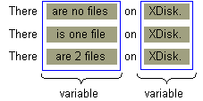

The words in a message may vary if both plural and singular word forms are possible. With theChoiceFormatclass, you can map a number to a word or a phrase, allowing you to construct grammatically correct messages.In English the plural and singular forms of a word are usually different. This can present a problem when you are constructing messages that refer to quantities. For example, if your message reports the number of files on a disk, the following variations are possible:
There are no files on XDisk. There is one file on XDisk. There are 2 files on XDisk.The fastest way to solve this problem is to create a
MessageFormatpattern like this:There are {0,number} file(s) on {1}.Unfortunately the preceding pattern results in incorrect grammar:
There are 1 file(s) on XDisk.You can do better than that, provided that you use the
ChoiceFormatclass. In this section you'll learn how to deal with plurals in a message by stepping through a sample program calledChoiceFormatDemo. This program also uses theMessageFormatclass, which is discussed in the previous section, Dealing with Compound Messages.
First, identify the variables in the message: Next, replace the variables in the message with arguments, creating a pattern that can be applied to a
MessageFormatobject:There {0} on {1}.The argument for the disk name, which is represented by
{1}, is easy enough to deal with. You just treat it like any otherStringvariable in aMessageFormatpattern. This argument matches the element at index 1 in the array of argument values. (See step 7.)Dealing with argument
{0}is more complex, for a couple of reasons:
- The phrase that this argument replaces varies with the number of files. To construct this phrase at run time, you need to map the number of files to a particular
String. For example, the number 1 will map to theStringcontaining the phraseis one file. TheChoiceFormatclass allows you to perform the necessary mapping.- If the disk contains multiple files, the phrase includes an integer. The
MessageFormatclass lets you insert a number into a phrase.
Because the message text must be translated, isolate it in aResourceBundle:ResourceBundle bundle = ResourceBundle.getBundle("ChoiceBundle", currentLocale);The sample program backs the
ResourceBundlewith properties files. TheChoiceBundle_en_US.propertiescontains the following lines:pattern = There {0} on {1}. noFiles = are no files oneFile = is one file multipleFiles = are {2} filesThe contents of this properties file show how the message will be constructed and formatted. The first line contains the pattern for
MessageFormat. (See step 1.) The other lines contain phrases that will replace argument{0}in the pattern. The phrase for themultipleFileskey contains the argument{2}, which will be replaced by a number.Here is the French version of the properties file,
ChoiceBundle_fr_FR.propertiespattern = Il {0} sur {1}. noFiles = n'y a pas de fichiers oneFile = y a un fichier multipleFiles = y a {2} fichiers
In this step you instantiateMessageFormatand set itsLocale:MessageFormat messageForm = new MessageFormat(""); messageForm.setLocale(currentLocale);
TheChoiceFormatobject allows you to choose, based on adoublenumber, a particularString. The range ofdoublenumbers, and theStringobjects to which they map, are specified in arrays:double[] fileLimits = {0,1,2}; String [] fileStrings = { bundle.getString("noFiles"), bundle.getString("oneFile"), bundle.getString("multipleFiles") };
ChoiceFormatmaps each element in thedoublearray to the element in theStringarray that has the same index. In the sample code the 0 maps to theStringreturned by callingbundle.getString("noFiles"). By coincidence the index is the same as the value in thefileLimitsarray. If the code had setfileLimits[0]to seven,ChoiceFormatwould map the number 7 tofileStrings[0].You specify the
doubleandStringarrays when instantiatingChoiceFormat:ChoiceFormat choiceForm = new ChoiceFormat(fileLimits, fileStrings);
Remember the pattern you constructed in step 1? It's time to retrieve the pattern from theResourceBundleand apply it to theMessageFormatobject:String pattern = bundle.getString("pattern"); messageForm.applyPattern(pattern);
In this step you assign to theMessageFormatobject theChoiceFormatobject created in step 4:Format[] formats = {choiceForm, null, NumberFormat.getInstance()}; messageForm.setFormats(formats);The
setFormatsmethod assignsFormatobjects to the arguments in the message pattern. You must invoke theapplyPatternmethod before you call thesetFormatsmethod. The following table shows how the elements of theFormatarray correspond to the arguments in the message pattern:
The
FormatArray of theChoiceFormatDemoProgramArray Element Pattern Argument choiceForm{0}null{1}NumberFormat.getInstance(){2}
At run time the program assigns the variables to the array of arguments it passes to theMessageFormatobject. The elements in the array correspond to the arguments in the pattern. For example,messageArgument[1]maps to pattern argument{1}, which is aStringcontaining the name of the disk. In the previous step the program assigned aChoiceFormatobject to argument{0}of the pattern. Therefore the number assigned tomessageArgument[0]determines whichStringtheChoiceFormatobject selects. IfmessageArgument[0]is greater than or equal to 2, theStringcontaining the phraseare {2} filesreplaces argument{0}in the pattern. The number assigned tomessageArgument[2]will be substituted in place of pattern argument{2}. Here's the code that tries this out:Object[] messageArguments = {null, "XDisk", null}; for (int numFiles = 0; numFiles < 4; numFiles++) { messageArguments[0] = new Integer(numFiles); messageArguments[2] = new Integer(numFiles); String result = messageForm.format(messageArguments); System.out.println(result); }
Compare the messages displayed by the program with the phrases in theResourceBundleof step 2. Notice that theChoiceFormatobject selects the correct phrase, which theMessageFormatobject uses to construct the proper message. The output of theChoiceFormatDemoprogram is as follows:currentLocale = en_US There are no files on XDisk. There is one file on XDisk. There are 2 files on XDisk. There are 3 files on XDisk. currentLocale = fr_FR Il n'y a pas des fichiers sur XDisk. Il y a un fichier sur XDisk. Il y a 2 fichiers sur XDisk. Il y a 3 fichiers sur XDisk.